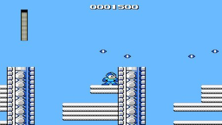
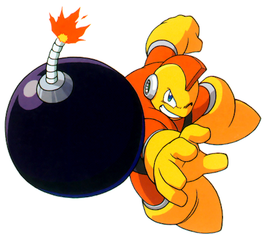

This is the main walkthrough section of the website. You can play through the levels in the order suggested in the table of contents below; there will be buttons at the bottom of each section to take you to the next and previous parts. Alternatively, you can click on one of the levels in the table if you need help with a specific level.
Table of Contents
G) Bomb Man's Stage
Reaching The Boss
It's time for the last robot master stage already! Not the last stage in the game though. Bomb Man's level takes place in a grand city of the future, high above the skyline. There are large sphere-shaped towers placed all over the stage as well as a few platforming segments to overcome. By the way, I love the music in this level. I like all of the music in the game but this theme is probably my favourite. Naturally, the boss will be weak to our most recently acquired weapon, the Fire Storm, so save it for the fight.
Head right at the start over the smooth white floor and you'll be met with a hostile welcome as a red Kamadoma leaps forth towards you. Deal with it as usual and head right up the platforms which act as enormous steps. Move over the top of the steps and keep looking out for more Kamadomas. After you hop down the 'steps' at the other side and continue on, you'll see a new, blue enemy called a Bombombomb (best enemy name). They're more like stage hazards than enemies because you can't actually hurt them yourself; instead, you'll just need to take cover in a safe place as they explode into bits of shrapnel. Go forward for a while and keep jumping to and fro over a series of similar looking ledges, standing in the spot shown in the nearby screenshot to safely avoid the shrapnel each time. You'll need to keep moving after each one before the one behind you explodes, which can make things a tad difficult.
After all the Bombombombs have been dealt with, you'll be in an area with some familiar Screwdriver enemies. There's a lower and upper path to take here, and I'd recommend trying to stay on the upper path as it makes it easier to dodge the 5 beams from the Screwdrivers. You'll also be able to get two small health refills on a little floating platform, but you can get to this easily enough from the lower path too. Speaking of the lower path, you may want to get the large weapon refill tht's snug in the bottom right corner, though you've probably had no real need for anything except the Mega Buster so far (unless you'd like to use the Cutter to kill the nearby enemies and hope they drop a 1-up or some health). Get to the top right of the screen and use the ladder to head up a screen.
Keep climbing this ladder, shooting left to take out the 4 Blasters on the wall before they can injure you. You can see there's a large health refill near the bottom right that you can reach if you climb down the ladder in the middle (make sure the Blasters are all gone first). When you're all topped up, climb the top-left ladder to progress once more.
Another new enemy, the first one in this stage that doesn't explode or die in one hit. This mean 'n' green dude is Sniper Joe, the first of the many Joe enemies that have appeared in many different variations throughout the classic MM series. This one, as its name suggests, will try to shoot you. They're pretty similar to the Picket Men from way back in Guts Man's stage, except this time you need to dodge the shots from straight in front as opposed to pickaxes raining from above. He has a shield and jumps a lot, making it a bit awkward to get hits in on him, so mash shoot whenever there's a good opening, while jumping over his shots. If he's really giving you trouble... Magnet Beam is your friend. Just go over him.
Heading onward again, another series of platforms like with the Bombombombs, but now you need to deal with Blasters and Bullet Bills Killer Bombs.
I'm seeing a trend with bombs in this level. Wonder why. This part's okay, just don't jump across the gaps when the Killer Bombs are flying at you; they'll push
you to your death. Just take the Blasters out with one hit, of course. Again, Magnet Beam could help. In fact, that weapon could help at really any point
where you need to get past something and there's lots of space for you to place platforms in the air, so I won't mention it again as an alternative way of
getting past enemies because you should know that by now. When you reach the long ladder, climb up it (don't let a bullet hit you while you're climbing).
The area after the ladder is very...messy. There are lots of platforms scattered around with some spike traps moving back and forth on a couple of them. There aren't any items to get around here, so just be careful and use the small platforms to the right to get up to to the top area with the ladder. Ascend a screen.
Up here are some more bullets to dodge; they'll come from the right so they can quickly hit you before you have time to react. Either use the two floating blocks to get to the left ladder, or jump over to it at the bottom, and take it up to a wide area with some floating blocks and...sigh...deadly spikes. There'll also be a few of those annoying Mambu enemies that shoot out 8 beams. Use very careful platforming here as you don't want these guys to knock you to your doom. After you can jump over to solid ground, continue dodging the Mambus' attacks and head right to yet another ladder. Climb it and you'll see a little area in which you can drop down. Hold right to get into an enclosed area with a 1-up guarded by a Sniper Joe. You may not want to duel him in such a tight area. If you do get the 1-up you'll have to head back out where you came in to the left.
On the lower path here, keep pushing on past a few of those brown spherical structures (this place looks so cool) and we'll find one more Sniper Joe. You'll need to take this one out if you wish to get into the door unscathed. Afterwards, take the sliding door into the boss corridor... nearly done now. Equip the Fire Storm.
This place is like the opposite of the last part of Elec Man's stage. There we had to climb up several screens, using timing to dodge electrical currents. Here, we have to go down a few screens, using timing to dodge our old friends, Adhering Suzies. To make the process much faster (if your health isn't low), you could just start climbing down at the very top of the ladder near the door we came in through and press the jump button once to drop down. You will probably get hit this way, but it'll save a lot of time and you might've gotten hit more than once doing it the normal way. It's also a bit too narrow to try defeating them here. It's totally up to you how you get down, though. Once we reach the bottom floor, it's battle time.
Boss Fight: Bomb Man
Bomb Man's weakness is the Fire Storm, which is understandable, to be fair. You wouldn't want to be near an open flame if you were a walking explosive. Bomb Man is in my opinion the easiest of the robot masters, at least in term of dodging his attacks. All he really does is jump around and throw his bombs at you, so as long as you watch your step and make sure you're not caught in the blasts, you'll be good. Keep firing the flame shots from the Fire Storm at him, and remember that this weapon also creates a shield that will damage him if he's next to you. It's safer just to try and keep away though and fire from afar. He has a fairly simple pattern.
If you've not unlocked the Fire Storm (to be fair, a lot of people play Bomb Man's stage first, and then Guts Man's), the Mega Buster will suffice.
Defuse that sucker to finish the level, and also get your final weapon if you've been following the guide order!
New Weapon: Hyper Bomb
The Hyper Bomb is what it says on the tin: a small bomb that you can throw a few feet in front of you. After a couple of seconds, it'll explode and deal some nice damage to anything nearby. You may want to practice using it as it moves in a small arc each time you throw it, and bounces a little.
And with that, our arsenal is complete and all the robot masters have been defeated! If you were wondering, Guts Man's true weakness is the Hyper Bomb, so if you haven't beaten his level yet, you now have the best weapon to use in that fight. Back on the title screen, you'll now have the option to pick Dr Wily. It's time to take the fight to Wily himself, the one responsible for all of this havoc in the first place.